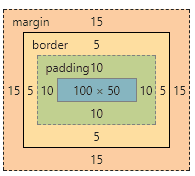
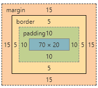

CSS盒模型
盒模型的认识
- 基本概念：标准模型+IE模型。 包括margin,border,padding,content
- 标准模型和IE模型的区别
- css如何设置获取这两种模型的宽和高
- js如何设置获取盒模型对应的宽和高
- 根据盒模型解释边距重叠
- BFC（边距重叠解决方案，还有IFC）解决边距重叠
一、基本概念：标准模型+IE模型
什么是盒模型：盒模型又称框模型（Box Model）,包含了元素内容（content）、内边距（padding）、边框（border）、外边距（margin）几个要素。如图：

由于IE盒模型的怪异模式，IE模型和标准模型的内容计算方式不同。
二、标准模型和IE模型的区别
IE模型和标准模型唯一的区别是内容计算方式的不同，如下图所示：

IE模型元素宽度width=content+padding，高度计算相同

标准模型元素宽度width=content，高度计算相同
三、css如何设置获取这两种模型的宽和高
通过css3新增的属性 box-sizing: content-box | border-box分别设置盒模型为标准模型（content-box）和IE模型（border-box）。
1 | .content-box { |

.content-box设置为标准模型，它的元素宽度width=100px。
1 | .border-box { |

.border-box设置为IE模型，它的元素宽度width=content + 2 padding + 2 border = 70px + 2 10px + 2 5px = 100px。
四、javascript如何设置获取盒模型对应的宽和高
dom.style.width/height只能取到行内样式的宽和高，style标签中和link外链的样式取不到。dom.currentStyle.width/height取到的是最终渲染后的宽和高，只有IE支持此属性。window.getComputedStyle(dom).width/height同（2）但是多浏览器支持，IE9以上支持。dom.getBoundingClientRect().width/height也是得到渲染后的宽和高，大多浏览器支持。IE9以上支持，除此外还可以取到相对于视窗的上下左右的距离
以上API在浏览器中测试过，有兴趣可以都试一下
五、外边距重叠
当两个垂直外边距相遇时，他们将形成一个外边距，合并后的外边距高度等于两个发生合并的外边距的高度中的较大者。注意：只有普通文档流中块框的垂直外边距才会发生外边距合并，行内框、浮动框或绝对定位之间的外边距不会合并。

且看下面例子：
1 | <section id="sec"> |
这里父元素section的高度是多少呢，100px，但是我们给section设置overflow:hidden后高度就变成110px，这是为什么呢，其实这里我们给父元素创建了BFC。，什么是BFC,请看下面的介绍。
六 、BFC
**BFC(Block Formatting Context)**：块级格式化上下文。
BFC决定了元素如何对其内容进行定位，以及与其他元素的关系和相互作用。当设计到可视化布局的时候，BFC提供了一个环境，HTML元素在这个环境中按照一定的规则进行布局。一个环境中的元素不会影响到其他环境中的布局。
BFC的原理（渲染规则）
- BFC元素垂直方向的边距会发生重叠。属于不同BFC外边距不会发生重叠
- BFC的区域不会与浮动元素的布局重叠。
- BFC元素是一个独立的容器，外面的元素不会影响里面的元素。里面的元素也不会影响外面的元素。
- 计算BFC高度的时候，浮动元素也会参与计算(清除浮动)
如何创建BFC
- overflow不为visible;
- float的值不为none；
- position的值不为static或relative；
- display属性为inline-blocks,table,table-cell,table-caption,flex,inline-flex;
说了这么多规则，放几个实类出来看看。
1 | <section id="margin"> |
请看这里的第二个p元素
2
他被一个父元素包裹，并且父元素有overflow:hidden 样式，前面的如何创建BFC的第一条就说了 overflow:hidden 可以创建一个BFC。结果如下图所示。
我们看这里的2，它的上下外边距都没有与1和3发生重叠，但3与4外边距发生了重叠。这就解释了BFC创建了一个独立的环境，这个环境中的元素不会影响到其他环境中的布局，所以BFC内的外边距不与外部的外边距发生重叠。
再看看下面的列子：
1 | <section id="layout"> |
效果如下：
写过前端页面的我们肯定遇到过这种情况，这里其实是浮动元素叠在 .right 元素的上面，如果我们想让.right元素不会延伸到 float元素怎么办,其实我们在.right元素上加 overflow:hidden （用其他的方式创建BFC也可以）创建BFC就可以解决。因为BFC不会与浮动元素发生重叠。

还有一种情况很常见，就是由于子元素浮动，导致父元素的高度不会把浮动元素算在内，那么我们在父元素创建BFC就可以让可以让浮动元素也参与高度计算